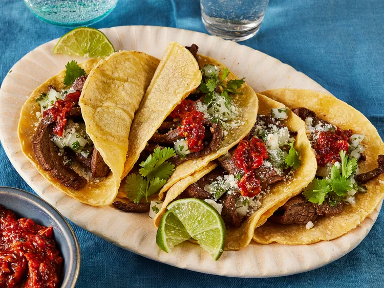

Carne Asada Tacos

Description
These carne asada tacos made with tender strips of flank steak, served on soft corn tortillas are as good as you get at a taqueria. So delicious topped with onion relish and homemade tomato salsa!
Ingredients
- 3 Pounds Flank Steak
-
Marinade:
- 1/2 Cup Soy Sauce
- 1/2 Cup Olive Oil
- 1/3 Cup White Vinegar
- 4 Cloves Garlic, Minced
- 2 Limes, Juiced
- 1 Tsp Salt
- 1 Tsp Ground Black Pepper
- 1 Tsp Ground White Pepper
- 1 Tsp Garlic Powder
- 1 Tsp Chili Powder
- 1 Tsp Dried Oregano
- 1 Tsp Ground Cumin
- 1 Tsp Paprika
-
Onion Relish:
- 1 White Onion, Chopped
- 1/2 Cup Chopped Fresh Cilantro
- 1 Lime, Juiced
-
Salsa:
- 4 Dried New Mexico Chile Pods
- 2 Large Tomatoes, Chopped
- 1 White Onion, Quartered
- 4 Cloves Garlic, Peeled
- 2 Jalepeno Peppers, Chopped
- 1 Pinch Salt & Black Pepper
-
Other:
- 1 (32 Oz) Package Corn Torillas
- 2 Cups Grated Cojita Cheese (Optional)
- 2 Limes. Cut into Wedges
Steps
- Lay flank steak in a large glass baking dish
- Make the marinade: Whisk soy sauce, oil, vinegar, 4 cloves of garlic, juice of two limes, salt, black pepper, white pepper, garlic powder, chili powder, oregano, cumin, and paprika together in a bowl until well blended; pour over steak, turning to coat both sides. Cover the dish with plastic wrap and marinate in the refrigerator for 1 to 8 hours
- Make the relish: Stir onion, cilantro, and lime juice together in a small bowl. Set aside
- Make the salsa: Preheat the oven to 450 degrees F (230 degrees C). Heat a skillet over medium-high heat. Add chile pods and toast for a few minutes; transfer pods to a bowl of water and soak for 30 minutes
- Place tomatoes, 1 onion, 4 cloves of garlic, and jalapeños onto a baking sheet. Roast in the preheated oven until vegetables are toasted, about 20 minutes. Transfer vegetables into a blender or food processor. Add soaked chiles, salt, and pepper; puree until smooth
- Remove steak from the marinade and shake off excess. Discard the remaining marinade. Cut the marinated flank steak into cubes or strips
- Heat vegetable oil in a large skillet over medium-high heat. Add steak; cook and stir until cooked through and most of the liquid has evaporated
- Warm tortillas in a dry skillet over low heat for about a minute on each side
- Place some steak on each tortilla; top with relish and prepared salsa. Sprinkle with cotija cheese. Garnish with lime wedges and serve
Recipe referenced from here